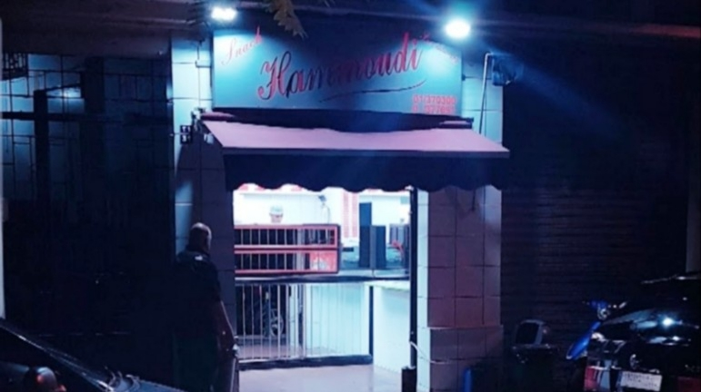
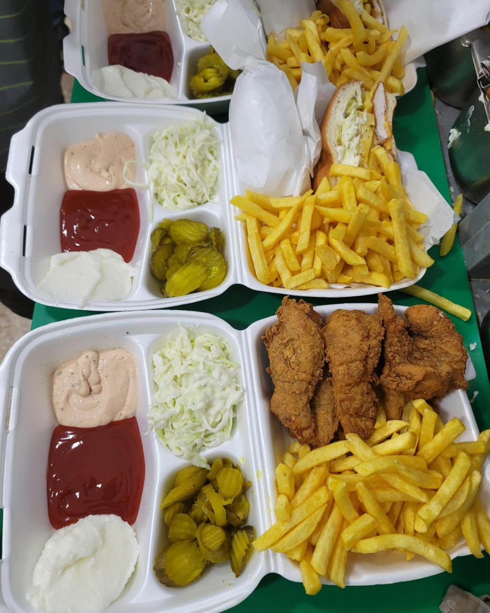
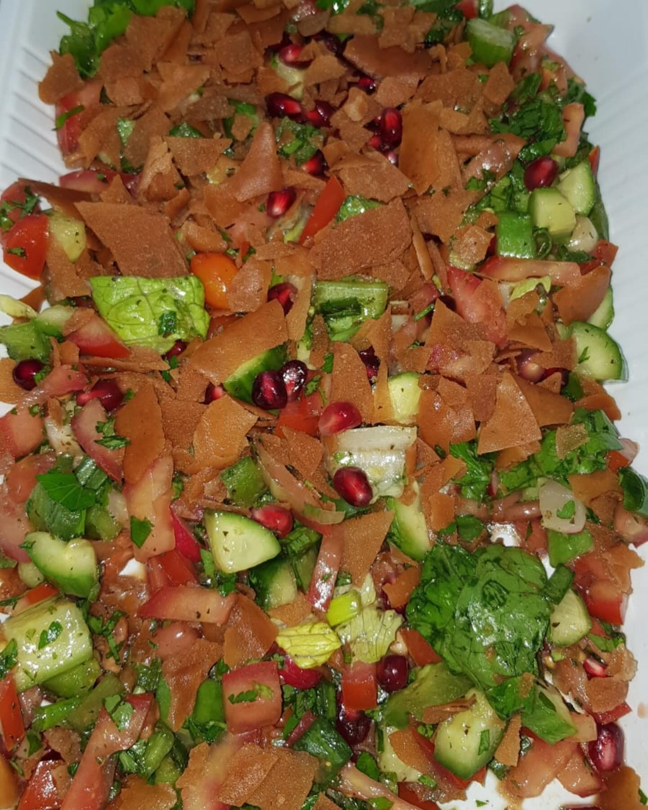
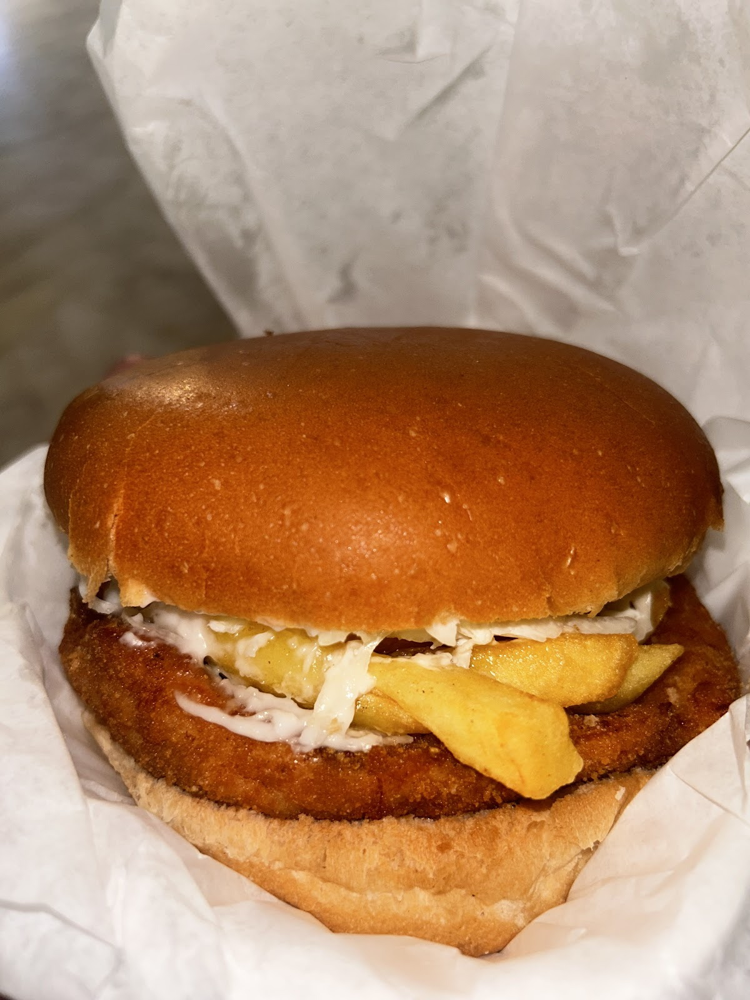
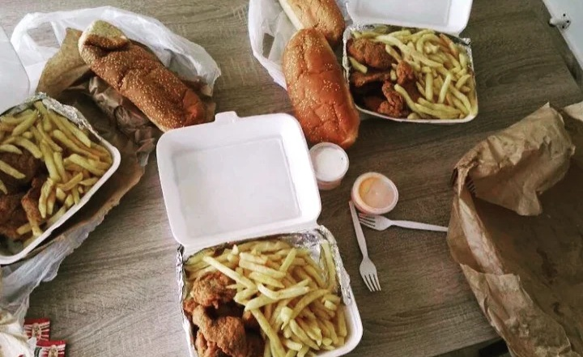

Two red signs, one small room لوحتين حمر، وغرفة صغيرة


4.6





The best escalope burger in lebanon. It is a huge portion with generous filling, and i also loved the small dining room and its design. Love the food there.Mike Aoun
I had the escalope burger, it was good. Kafta sandwich also good. Place has been open since the 1970s.Reza Mak
Greatest escalope of the town! This place is famous in their Escalope and Kafta sandwich!Marwan
VFVX+C5W, Maurice Barres, Beirut, Lebanon
+961 1 370 200